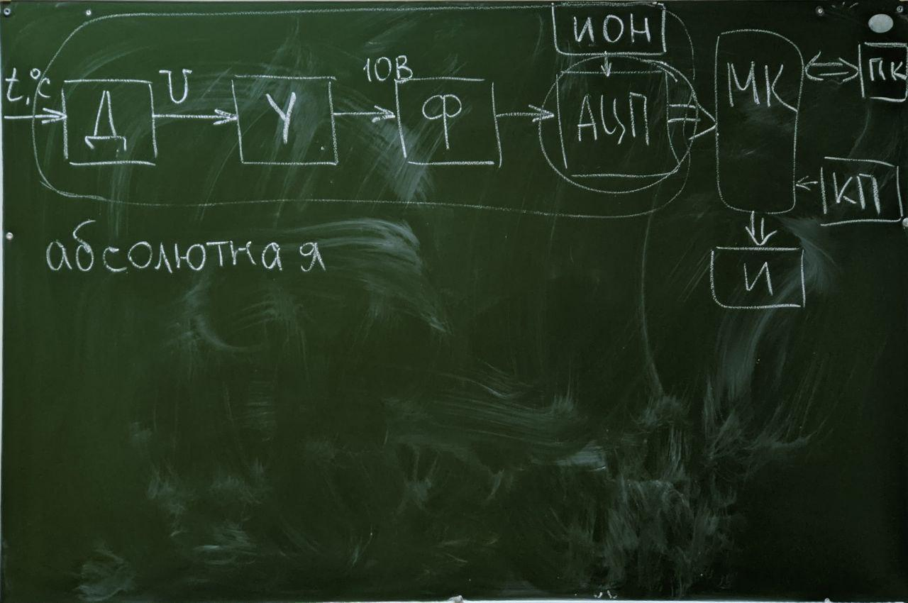
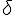
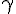

Будет зачёт
Будут лабы (начнутся около 10-12 марта)
Надо будет оформить отчет по ГОСТу (курсач без задания)
Под цифровым измерительным прибором подразумевается прибор, с помощью которого происходят измерения (чаще всего неэлектрической) величины, а результат измерения представлен с помощью цифрового индикатора
Основные блоки в составе цифровых измерительных приборов:
- Датчик или первичный преобразователь, который формирует на выходе аналоговый сигнал (обычно напряжение или ток) пропорциональный величине измеряемого параметра (Рисунок 1)
- Усилитель, задача которого усилить сигнал с выхода датчика до входного диапазона АЦП
Рисунок 1 - Датчик
Рисунок 2 - Усилитель

Рисунок 3 - Полная схема ЦИП
***Я решил пока не продолжать писать то же что было и на МиСЦОС сегодня***
Погрешности:
- Абсолютня - отклонение величины измеряемого параметра от его номинального значения ()
- Относительная - отношение абсолютной погрешности к номинальному значению измеряемого параметра, выроженное в процентах ()
- Приведенная - отношение абсолютной погрешности к диапазону измерения, выраженное в процентах, определяет класс точности ЦИП ()